Qanday ishlatiladi
EMR — brauzerda ishlaydigan video-editor. Quyida asosiy amallar haqiqiy UI skrinshotlari va qisqa tushuntirishlar bilan ko‘rsatilgan.
1 Loyihani boshlash
- Asosiy video/rasm yuklang (drag&drop yoki fayl tanlash).
- + tugmasi — qo‘shimcha media. Yangi clip playheadga eng yaqin kesish nuqtasiga tushadi.
- Musiqa: nota tugmasi → MP3/WAV.
- Google orqali kiring — loyihalar Supabase’da saqlanadi.
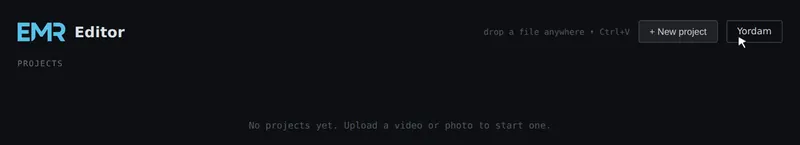
2 Timeline — sudrash va tanlash
Cliplarni sudrab joylashtiring. Marquee yoki Ctrl bilan multi-select.
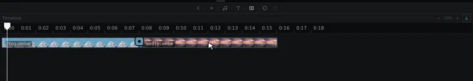
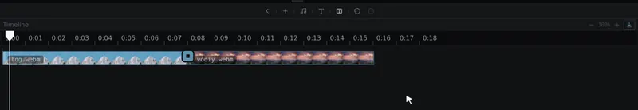
3 Trim, Split va o‘chirish
Tutqichlarni sudrab trim. Playhead → S yoki context menu → Split.
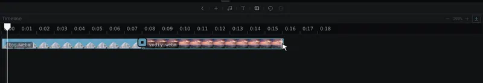
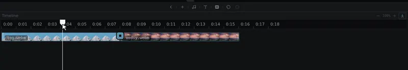
O‘chirish: Delete / Backspace.
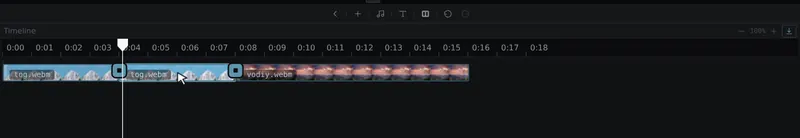
4 Ovoz va Mute
Context menu yoki mobil action bar orqali volume / mute.
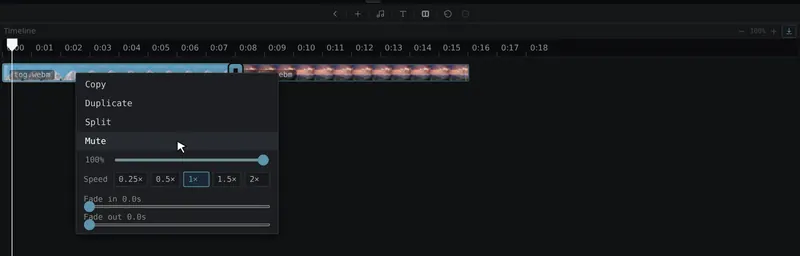
5 Tezlik (Speed)
0.5× … 2×. Block uzunligi moslashadi.
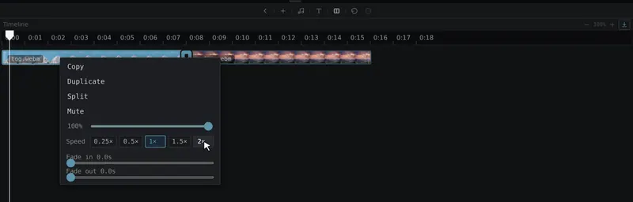
6 Fade In / Fade Out
Video va musiqa uchun fade (0–2 s). Export’da GainNode ramp.
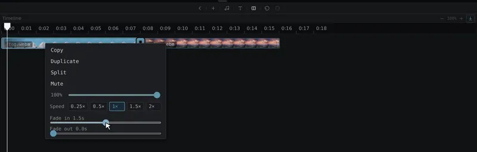
7 Transition (clip oralig‘i)
Junction tugmasi → pastki panel. Transition preview'da ham, export'da ham ko'rinadi.
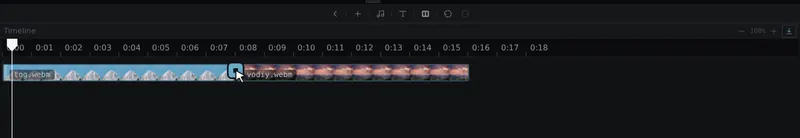
Barcha transition turlari:
F Fade · ←→↑ Slide · ■/□ Dip · + Zoom · B Blur · ◂▸ Wipe8 Matn (Text overlay)
- Matn, o‘lcham, rang, qalinlik, hizalash
- Timeline’da alohida matn treki
- Export’da canvas ustiga chiziladi
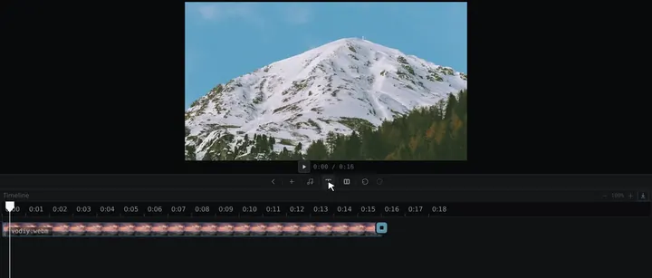
9 Musiqa
Nota tugmasi → MP3/WAV. Waveform, trim, fade, volume.
10 Export — WebM, Download, MRdrive, MP4
Export tugmasi timeline’ni WebM ga yozadi.
- Download — WebM yuklab olish (avtomatik emas).
- Export to MRdrive — bulutga saqlash.
- MP4 ga o‘girish — FFmpeg.wasm (birinchi marta ~10–30 MB).
📱 Telefon / planshet
Mobil action bar (SVG ikonkalar). Landscape va portrait moslashuvi.
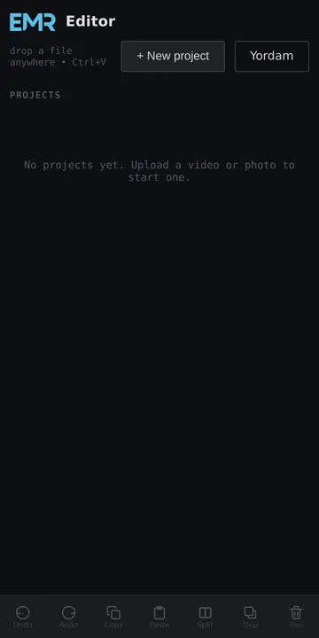
⌨️ Klaviatura yorliqlari
| Tugma | Amal |
|---|---|
| Space | Play / Pause |
| ← / → | Playhead ±0.1 s |
| Shift+← / → | Playhead ±1 s |
| S | Split |
| Delete / Backspace | O‘chirish |
| Ctrl+Z | Undo |
| Ctrl+Shift+Z yoki Ctrl+Y | Redo |
| Ctrl+C / V / D | Copy / Paste / Duplicate |
| Ctrl++ / - | Zoom |
| Ctrl+0 | Zoom reset |
| Esc | Transition panelini yopish |
Yana nimalar bor?
- Rasm cliplar: duration 1–10 s
- Loyihalar: Supabase (Database + Storage)
- Undo: 30 qadam